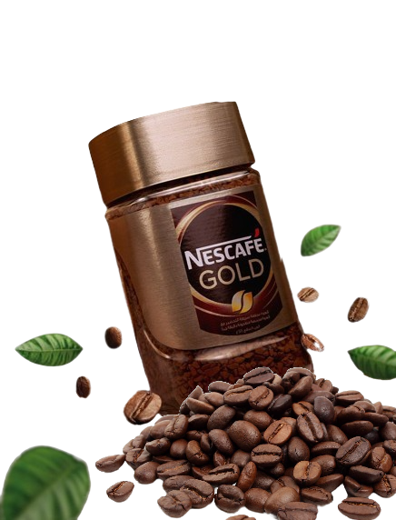

Enjoy your day with a NESCAFÉ
Whether you like yours simply black or flamboyantly flavoured, piping hot or ice cold, or indulging yourself with added cream or a splash of whisky, there’s a NESCAFÉ coffee to suit whatever mood you’re in.
OUR STORY
NESCAFÉ was invented in 1938 and has since become the world's leading brand of instant coffee. It is a convenient and delicious way to enjoy a cup of coffee, and it is enjoyed by millions of people every day. NESCAFÉ has played a major role in making coffee more accessible and convenient for people around the world, and it is committed to innovation and sustainability.
OUR RECIPES
Nescafé coffee recipes are the perfect way to enjoy your favorite cup of coffee, whether you're looking for a hot or cold drink, or something sweet or savory. Our recipes are easy to follow and can be made with just a few simple ingredients. From classic coffee drinks like cappuccinos and lattes to more creative creations like Dalgona coffee and iced coffee mocktails, we have a recipe for everyone. So explore our collection of coffee recipes today and find your new favorite way to enjoy Nescafé coffee.
NESCAFÉ GOLD
NESCAFE Gold is a premium instant coffee that is made with a blend of carefully selected Arabica and Robusta coffee beans. It is roasted to perfection to bring out the natural flavors and aromas of the beans. NESCAFÉ Gold is known for its smooth, rich taste and creamy texture.


NESCAFÉ CLASSIC
NESCAFÉ CLASSIC is the perfect coffee for any occasion, whether you're starting your day off right or enjoying a break with friends. It's made with a blend of carefully selected Arabica and Robusta coffee beans that are roasted to perfection, giving it a rich flavor and aroma that is loved by people all over the world.
SEE MORE OTHER PRODUCTS